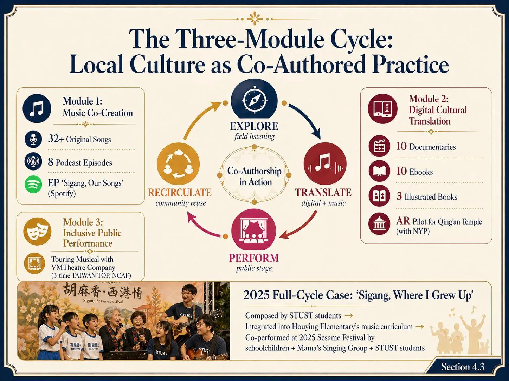
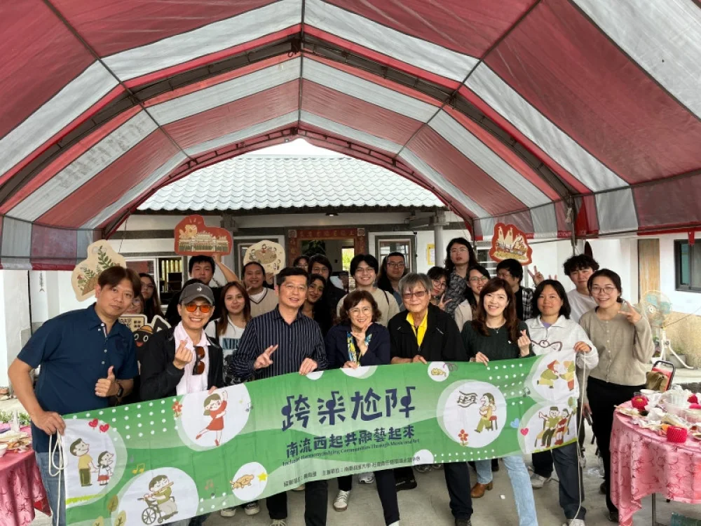

地方踏查與訪談Fieldwork and interviews
從地方故事、節慶、人物與產業進入場域。Entering the field through stories, festivals, people, and local industries.
Quick Brief · 2025 Status Quick Brief · 2025 Status
這是一個可公開簡報的導覽頁，整理計畫目前狀態：為什麼是西港、為什麼是音樂、我們如何運作、目前累積了什麼成果，以及這套模式如何延伸到亞太合作。 This public-facing brief summarizes the current project status: why Sigang, why music, how the model works, what has been produced, and how the approach is extending toward Asia-Pacific collaboration.

簡報路徑Presentation Path
01｜地方脈絡01 | Local Context
西港有香科、胡麻、地方記憶與社區網絡。計畫的起點不是替地方「做活動」，而是讓學生、居民、學童、長者與地方組織一起把文化重新說出來、唱出來、演出來。Sigang has ritual culture, sesame agriculture, local memory, and community networks. The project does not simply bring events to the community; it creates ways for students, residents, schoolchildren, elders, and local groups to tell, sing, perform, and carry culture forward together.


02｜共融對象02 | Inclusion Focus
目前的工作把身障者、長者、偏鄉學童、返鄉青年與大學生放進同一個文化生產過程。每一群人不只是受益者，也可能成為故事、聲音、表演、教材或地方記憶的一部分。The project connects people with disabilities, elders, rural schoolchildren, returning youth, and university students within the same cultural production process. Each group is not only an audience or beneficiary, but a possible contributor to stories, sounds, performances, teaching materials, and local memory.
03｜工作方法03 | Method
從地方故事、節慶、人物與產業進入場域。Entering the field through stories, festivals, people, and local industries.
把訪談、記憶與文化符號轉成歌曲、聲音與表演。Turning interviews, memories, and symbols into songs, sound, and performance.
用 Podcast、紀錄片、電子書、AR 與展覽保存並再流通。Using podcasts, documentaries, ebooks, AR, and exhibitions for reuse.
讓文化成果回到學校、社區、節慶與公共舞台。Bringing the work back to schools, communities, festivals, and public stages.

04｜課程到現場04 | Curriculum to Field
課程不是只在教室完成，而是進入場域：創作、表演、活動企劃、舞台技術、影像與數位內容，都被放進一個有地方夥伴參與的實作循環。Courses move beyond the classroom. Songwriting, performance, event planning, stage production, video, and digital content are connected to a field-based cycle with local partners.
05｜成果與影響05 | Outcomes and Impact
截至 2025 年，計畫累積歌曲、Podcast、紀錄片、電子書、繪本與音樂劇等成果。這些內容可以被學校、社區、節慶、外賓簡報與後續研究再次使用。By 2025, the project has produced songs, podcasts, documentaries, ebooks, illustrated books, and musical theatre. These materials can be reused in schools, community settings, festivals, international briefings, and future research.


06｜延伸與合作06 | Scaling and Collaboration
這一頁的說法會保持公開、穩健：我們正在把西港經驗整理成可說明、可交流、可被其他高教場域參考的合作框架。The public-facing message remains measured: the Sigang experience is being organized into a framework that can be explained, exchanged, and referenced by other higher education contexts.